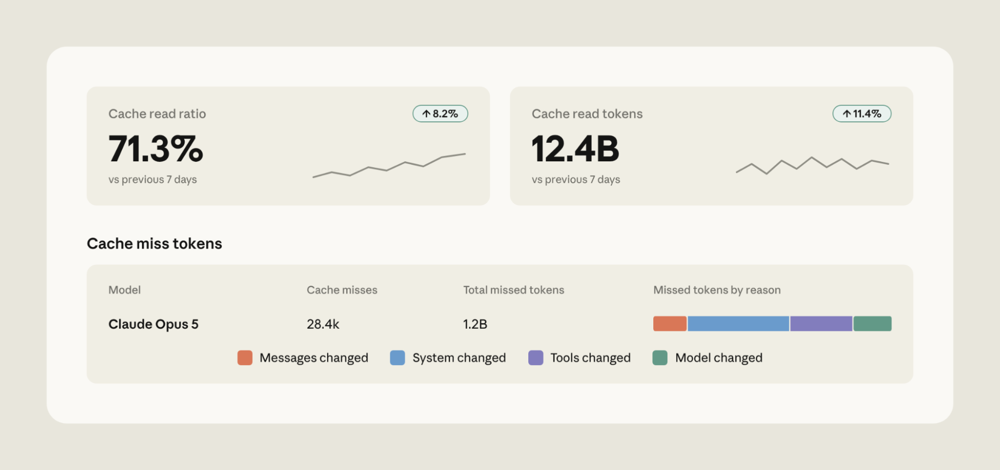
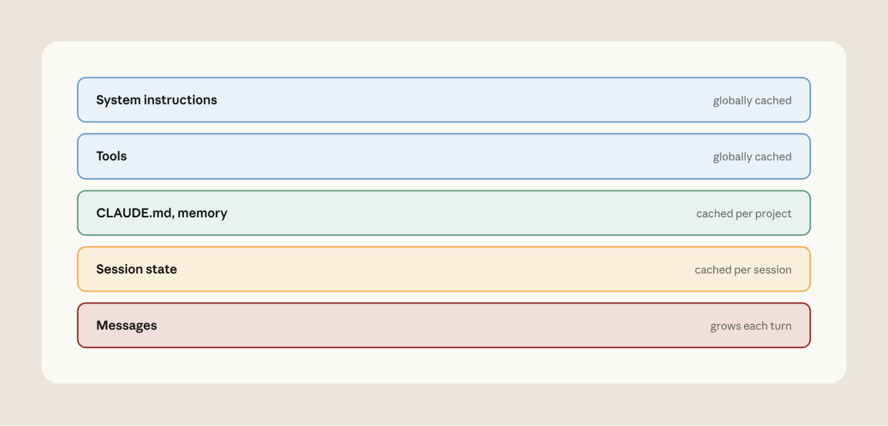
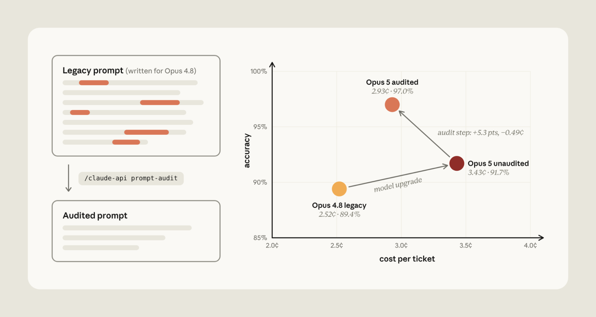
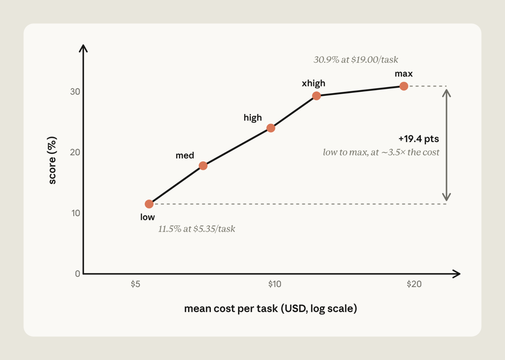
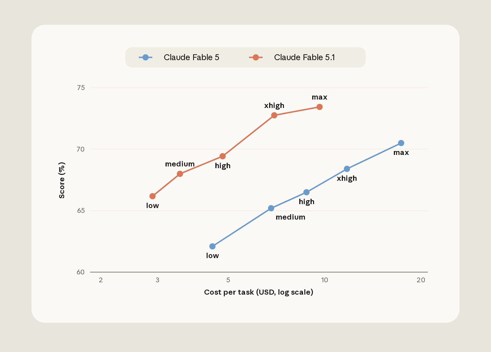
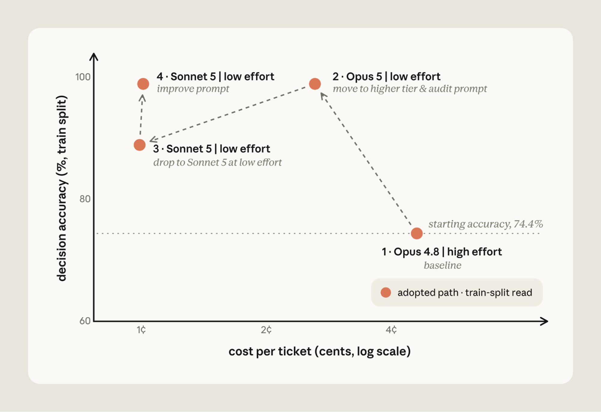
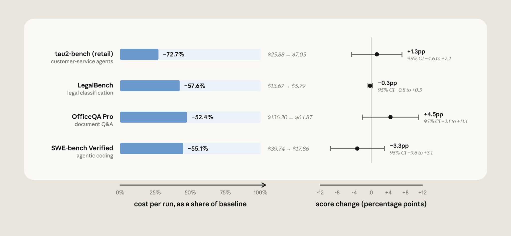

Performance and cost are often viewed as a trade-off: to spend less, you accept worse results. In practice, we've found that many applications using Claude Platform can cut costs without giving up performance with three fixes: maximize the prompt cache hit rate, remove anti-patterns from your prompts when upgrading to frontier Claude models, and calibrate effort to the task. We've put this guidance into the claude-api skill. In this article, we show how Claude Code with the claude-api skill can often find ways to reduce cost while maintaining or improving performance.
Prompt cache
Before Claude generates a response, it first processes your prompt into an internal working state. This step, called prefill, is the expensive part of handling input. Prompt caching saves that state (the key–value, or KV, cache): when a request starts with the same prefix, Claude reads it back instead of recomputing it. Cache reads are billed at a fraction of the full input price.
There are a few practical considerations to ensure effective use of the prompt cache. First, the prompt cache is pinned to a specific model. Second, prompt cache reads must be byte-exact across the prompt prefix. Finally, the prompt cache has a limited time-to-live (TTL).
With these points in mind, there are a few practical tips:
- Be careful changing effort setting mid-conversation. These settings render into the prompt ahead of your content, so they are part of the cached prefix. Only with select Claude models, including Opus 5 and Fable 5.1, can you update effort mid-conversation without breaking the cache.
- Keep volatile values out of the prefix. A dynamic timestamp or ID in the system prompt can change across model calls, and break the cache.
- Avoid tool definitions that reorder themselves. When using the Claude Messages API, the prompt is assembled in a fixed order with tool definitions rendered at the top. Any change to the tool definition will break the cache.
- Be careful when forking conversations. Subagents and branches only share the parent’s cache when the fork’s prefix is byte-identical, on the same model, and using the same effort.
How to fix it
We’ve accumulated a few lessons for prompt cache management:
- Monitor your prompt cache hit rate carefully. Claude Console and the cache diagnostics API provide prompt cache diagnostics, including reasons for prompt cache misses (Figure 1) and exactly where two requests diverged.

Monitor your prompt cache hit rate carefully. Claude Console and the cache diagnostics API provide prompt cache diagnostics, including reasons for prompt cache misses (Figure 1) and exactly where two requests diverged.
Monitor your prompt cache hit rate carefully. Claude Console and the cache diagnostics API provide prompt cache diagnostics, including reasons for prompt cache misses (Figure 1) and exactly where two requests diverged.
- Defer rarely used tools. Declare all your tools up front but mark the rarely used ones defer_loading: they stay out of the cached prefix and are appended into the conversation only when Claude looks them up with tool search, so the cache is preserved.
- Apply system prompt updates as messages. Claude Platform lets you add a system instruction as a message mid-conversation instead of editing the system prompt, which preserves the cache.
- Lay out the request out so the stable part stays stable. Add static context (tool definitions and the system prompt) first and the growing conversation behind them (Figure 2).

- Make changes to model or effort when the prompt cache will already be broken. Certain operations, like compaction, already rewrite much of the cache (the conversation). That is a good moment to switch model or effort, since you are paying for a miss anyway.
- Move the cache breakpoint as the conversation grows. With Claude Platform, you can set automatic caching to apply the cache breakpoint to the last cacheable block.
- Pre-warm the cache. To reduce latency, send a request with max_tokens: 0 and an explicit cache breakpoint. This processes the prompt and writes it to the cache without generating anything. If you run it at session start (for example, while a user is typing), the first real request hits a warm cache.
- Don’t exceed the prompt cache TTL. The 5-minute cache TTL counts from the start of the request. If an agent blocks on tool calls or subagent requests that run longer than 5 minutes, the parent's cache expires before the result comes back. In cases like this, consider setting a 1-hour TTL on the prefix instead.
Instructions
Prompts can accumulate instructions that patch model weaknesses. These instructions can drift relative to the capabilities of the latest Claude models. Here are common prompting “anti-patterns” that hobble frontier Claude models and can inadvertently increase costs:
- Verification rituals. Instructions like "double-check your work” or "verify twice before responding” are often taken literally by frontier models and can waste tokens.
- Thoroughness and emphasis boosters. "Be maximally thorough," "CRITICAL: YOU MUST ALWAYS…" can lead to verbosity and extra tool calls when working with frontier models.
- Mandatory procedures and scratchpad scaffolds. Fixed step processes (e.g., "think step by step in a scratchpad") or reasoning templates are rituals that frontier models don't need. This scaffolding can stack on top of native reasoning and use unnecessary tokens.
- Stale examples. Few-shot examples tuned to an older model's failure modes can teach a frontier model to imitate long reasoning chains on requests that don't need them.
- Contradictory rules. Frontier models are better at instruction following. Contradictory instructions ("always refund within policy" vs. "never issue refunds without escalation") can be followed more literally by frontier models, resulting in degraded performance.
- Dated configuration. Settings written for an older Claude generation (e.g., manual thinking budgets) can be rejected by Claude Platform when upgrading to frontier models.
How to fix it
We've updated the claude-api skill with a new command that watches out for these anti-patterns. In Claude Code, run /claude-api prompt-audit against your prompts, skills, or tool descriptions. The audit covers anything in your working directory, including application code that calls the Claude API and Claude Code's own configuration (e.g., CLAUDE.md or skills).
For example, we tested a model migration from Opus 4.8 to Opus 5 on a customer support benchmark. We started from a clean prompt and planted one anti-pattern at a time (a retired thinking setting, a pair of contradictory refund rules, a manual scratchpad, "verify twice", "be maximally thorough", and a mandatory six-step procedure), giving six legacy prompts.
We ran each on Opus 4.8, on Opus 5 with only the model ID changed, and on Opus 5 after running /claude-api prompt-audit once per prompt (Figure 3 shows the average across the six).

Figure 3 | The effect of prompting anti-patterns during model migration from Opus 4.8 to Opus 5.
With Opus 5, verification rituals ("verify twice") use unnecessary tokens by duplicating order lookup on every refund. Emphasis boosters ("be maximally thorough") became dozens of unneeded knowledge-base searches.
Running /claude-api prompt-audit removed the anti-patterns, decreasing costs by 14.6% and increasing accuracy by 5.3% on average. Cost dropped because extra tool calls and duplicated reasoning were eliminated. Accuracy rose for three reasons. The retired thinking setting made the API reject every routing request outright. The contradictory refund rules led Opus 5 to withhold four refunds it owed while it asked the customer to confirm. And the manual scratchpad collided with Opus 5's built-in thinking: on three tickets it wrote the tool call inside its reasoning and never executed it.
Effort
Effort tells Claude “how hard to work.” At low effort Claude generally reaches conclusions faster. At high effort, Claude deliberates, verifies, and explores alternatives before answering.
Cost-versus-performance across effort levels on a single model can vary. For example, Claude Fable 5 scores 11.5% at low effort for $5.35 per task on FrontierCode Diamond (the hardest 50 tasks). At max effort, Fable 5 gets 30.9% for $19.00 per task; changing effort raises the score about 2.7x (+19 points) for about 3.5x the cost (Figure 4).
On Claude Fable 5.1, Humanity's Last Exam (without tools) shows a steep curve with a diminishing last step. It scores about 53% at low effort for about $0.30 per question and about 61% at max effort for about $2.23; the last step up to max adds about half a point for 46% more cost. The gain falls inside the benchmark's run-to-run noise, so you pay more for no measurable gain.

Effort can be miscalibrated in either direction:
- Assuming higher is always better. High effort can cause over-thinking. Claude spends more time deliberating than the task warrants, which adds cost and latency and can degrade answer quality. Deliberation only helps while there's still evidence to find.
- Biasing to low effort. Set too low, Claude stops before it has enough evidence. It makes fewer tool calls, so it may answer from the first search result instead of the third. It thinks less on hard steps and skips the check it would normally run on its own. The answer looks finished, but it's built on partial information.
How to fix it
There are some useful ways to calibrate effort:
- Test stronger models at lower effort. A stronger model at low effort can be cheaper than a weaker model working hard (high effort). For example, on CursorBench 3.2, Claude Fable 5.1 at low effort matches the performance of Fable 5 at high effort at a third of the cost (Figure 5). Two things make the newer model cheaper: at low effort it does less work per task, and Fable 5.1's prompt-cache reads are priced at $0.25 per million tokens versus $1.00 for Fable 5. Even at Fable 5's prices, Fable 5.1 at low effort would cost about 40% less.

- Understand your task shape. Measuring application performance across a sweep of effort levels is a useful way to understand the cost-performance tradeoff for your particular task. On a non-saturated evaluation, a flat cost-performance curve across effort levels suggests that the task is not bound by thinking compute; increasing effort is not beneficial.
This calibration often involves running an evaluation across models and effort levels. In Claude Code, /claude-api hillclimb performs this search for you: it splits your evaluation into train and test sets, proposes configuration changes, and reads failing train examples to fix what it finds.
We ran it on a customer support benchmark, starting from Opus 4.8 at its default (high) effort. The hillclimber first tried Opus 5 at low effort, applying prompt-audit to remove mandatory tool-call rituals, scratchpad steps, and contradictory rules. That cleared the Opus 4.8 baseline at 98.9% train accuracy and cut cost to 2.6 cents per ticket.

It then stepped down to Sonnet 5 at low effort, which was cheaper still at 1 cent per ticket, but accuracy fell to 88.9%. Reading the failing train tickets, Claude added routing rules and a refund-cap cross-reference to the prompt, bringing Sonnet 5 back to 98.9% at the same cost.
On the 14 held-out tickets the search never saw, the final configuration scored 90.5% against the original setup's 78.6%, at about one fifth the cost.
Automating cost reduction
Prompt caching, instructions, and effort are common levers for reducing cost. Our documentation covers even more. To run a holistic cost audit of application code that uses the Claude API, we've added /claude-api cost-optimize: it profiles where your spend goes, applies cost reductions, and, if you provide an evaluation, shows how savings trade off with performance.
cost-optimize starts by finding where your tokens go: from your organization's usage and cost reports if you have a Claude Admin API key, from the usage object on each API response if your application logs it, or, failing both, by reading your request-building code and estimating.
It then ranks the available savings, starting with prompt caching, trimming what each request carries (including a prompt-audit), bounding output, and batching unattended work. If you supply an evaluation, it goes further and computes cost and performance across effort levels and model choices.
We ran this on four public benchmarks, starting with Sonnet 5 as a baseline (Figure 7):
- LegalBench (~58% lower cost): cost-optimize proposed caching a shared prefix across tasks, setting low effort, and processing tasks via the Batch API. Thinking tokens fell from 102,779 to 8,284, but pass rate stayed within noise and cost dropped by ~58%.
- tau2-bench retail (~73% lower cost): By implementing prompt caching with explicit breakpoint placement, cost-optimize reduced spend by 73% while keeping pass rate flat.
- OfficeQA Pro (~52% lower cost): cost-optimize added batch processing and document caching, which brought cost down from $136.20 to $64.87.
- SWE-bench Verified (~55% lower cost): cost-optimize found that the default config already caches correctly. Savings came from setting effort to medium and constraining the agent’s output to just a few concise sentences. Median steps per task went from 29 to 17 and prompt tokens fell from 75.2M to 33.7M.

Getting started
Start with /claude-api prompt-audit when you've migrated to a frontier Claude model and want to check your existing prompts against it. It scans the prompts, skills, and tool descriptions in your working directory. This can be application code that calls the Claude API or Claude Code's configuration (CLAUDE.md, skills). It removes common anti-patterns that hobble frontier models.
Reach for /claude-api cost-optimize when your application uses the Claude API and you want a cost audit. It profiles token spend and then tests different levers: it applies prompt-audit, but also checks for ways to lower cost via prompt caching, batching unattended work, or bounding output. If you provide an evaluation, it measures the effort and model selection trade-offs.
Finally, use /claude-api hillclimb for an iterative search over cost and performance. Given an evaluation, Claude splits it into train and test sets, then proposes updates to your application that aim to reduce cost while maintaining baseline performance. Claude reads the failing train cases to guide the search, and the final configuration is scored on the held-out test set.
To learn more: